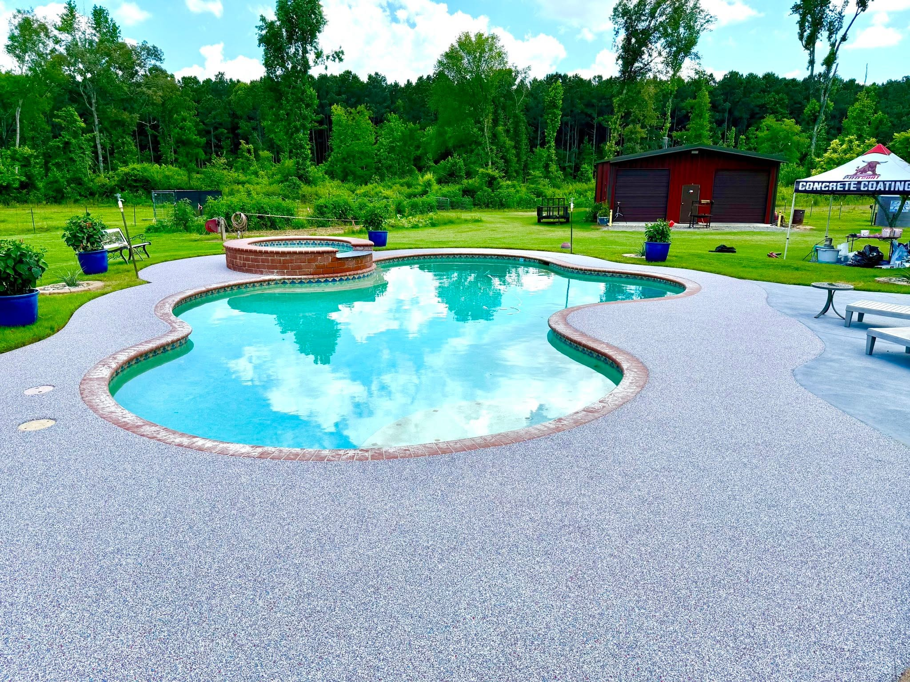
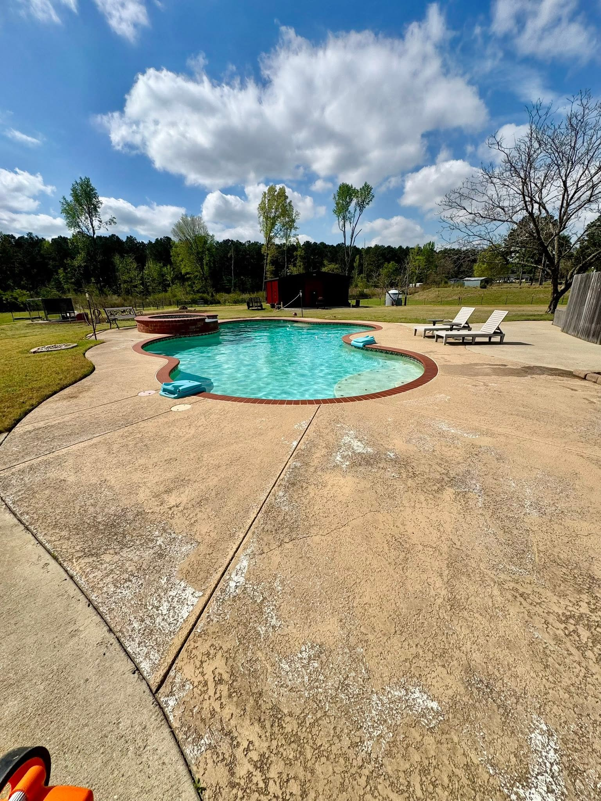
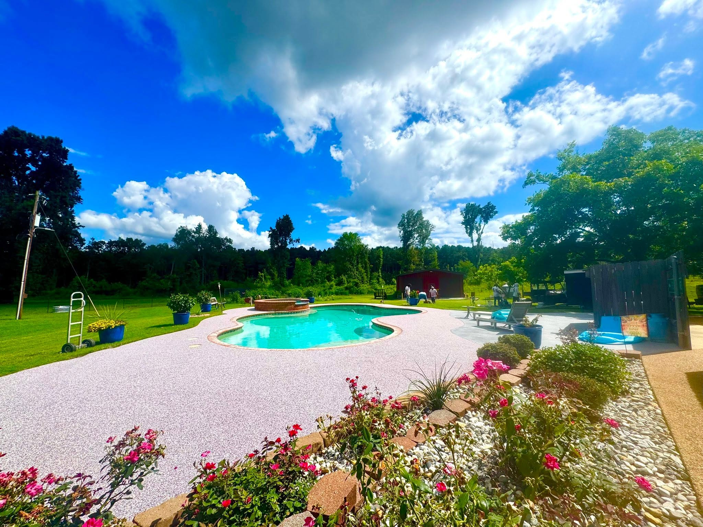
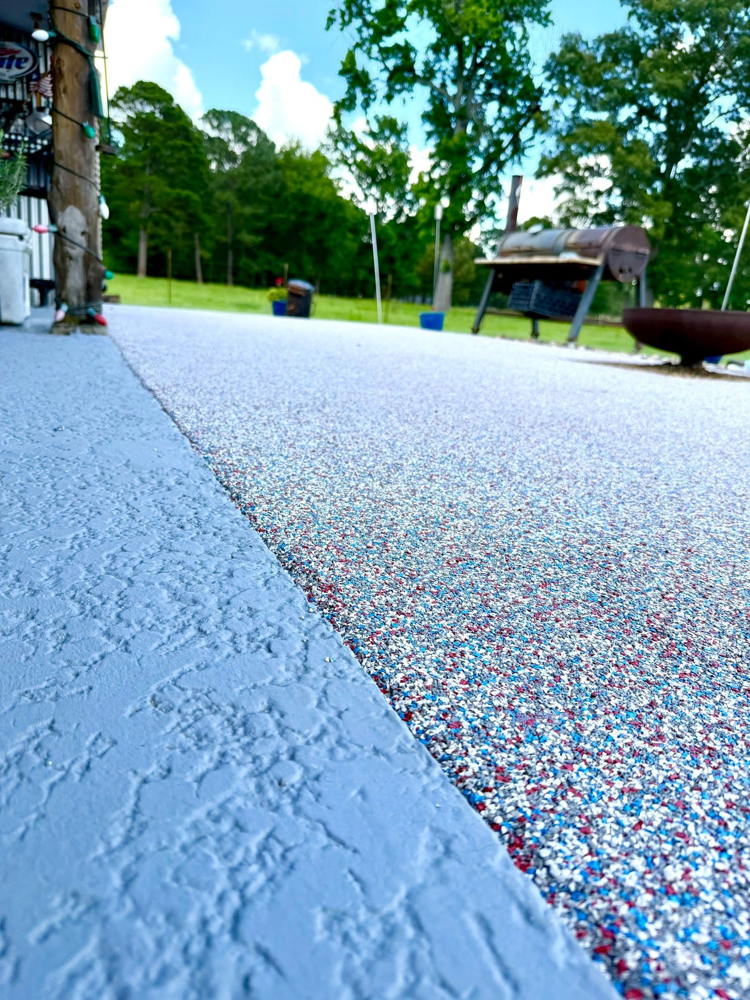

Marshall pool deck project
A full backyard pool surround refreshed with a crisp custom blend.
Marshall shows how much a pool area changes when worn concrete is replaced with a cooler, cleaner, slip-conscious rubber surface that frames the water, brick coping, landscaping, and outdoor seating.

Before and after
From stained concrete to a bright resort-style pool deck.
There is one before photo, but it tells the story clearly: the old concrete was weathered, stained, and visually flat. The finished surface wraps the pool with a cleaner edge, richer texture, and a custom color blend that photographs beautifully.

Before: worn concrete
After: finished pool surround
Drag the project slider



Want this pool deck upgrade?